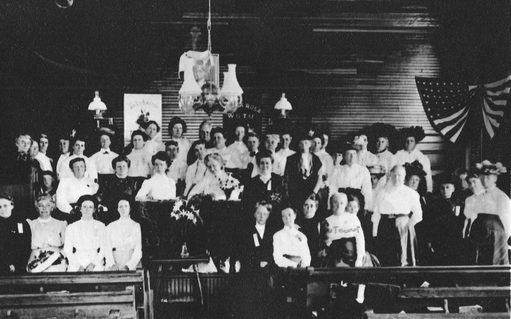
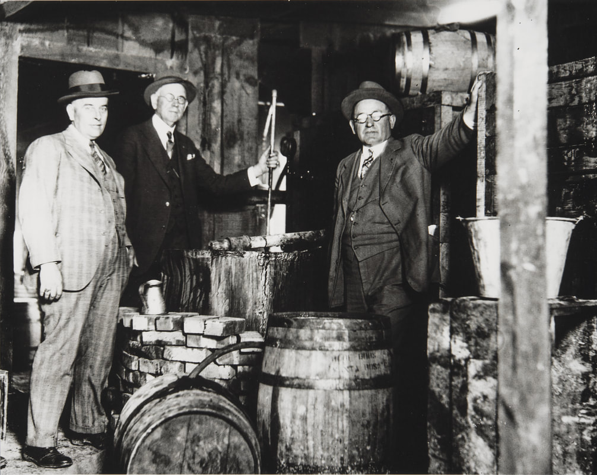
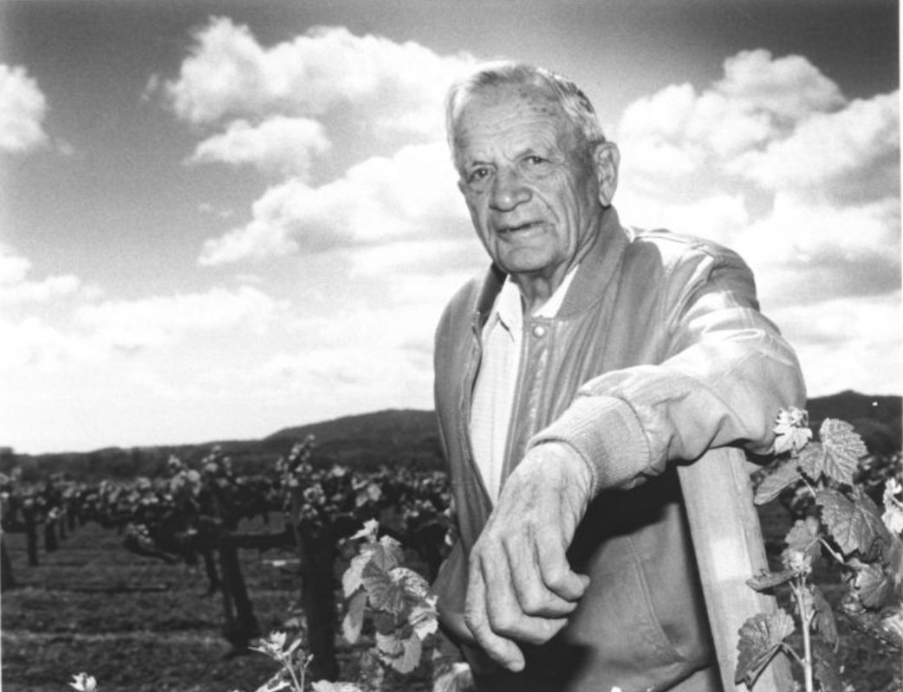

Bootleggers and Prohibition
© 2020 Hannah Clayborn All Rights Reserved
|
Preface
Apart from information that is common knowledge about the Prohibition era, details about bootlegging and the operation of illegal stills in the vicinity of Healdsburg are taken from oral interviews conducted with Sonoma County residents by this author at the Healdsburg Museum in 1992 and 1993. Because of the illegal nature of the activities discussed, several informants requested anonymity, and are therefore not named in this article. It had been brewing for decades, perhaps since the Civil War, but it did not become official until 1920. The law to ban the manufacture, sale, and transport of intoxicating liquors in the United States burst upon the economy of Sonoma County like an exploded boiler. And boilers figured prominently in the new covert local industry that grew up to take advantage of the situation. After causing wild fluctuations in the local grape market, Prohibition, the 18th Amendment to the Constitution, gave birth to “bootlegging” and the operation of illegal stills. The term comes from the practice of hiding bottles of alcohol in the “leg” of a boot. From the early 1920s until 1933, business was booming. Sonoma County had become increasingly dependent on its grape and hop harvests since the 1880s. Many local grape growers had anticipated Prohibition, and organized to fight it as early as 1914. Ironically, when the law was first enacted, these same growers saw a sharp increase in grape prices. The 1920 law allowed for the sale of "juice grapes", and buyers who intended to stock up for home wine making caused a spike in demand. The price of grapes shot from $10 to $100 a ton. In San Francisco grapes sold straight from railway cars on the Embarcadero. After the initial boom, prices plummeted to as low as $5 a ton by about 1922. Many local vintners and growers faced ruin. Some, like Simi Winery, never expected the law to last and opted to wait it out. Simi's operators did not take advantage of the year grace period to sell off its stored wine in 1920, so by the time repeal came in 1933, the winery still had a half million gallons of aged wine. To survive in those 14 intervening years, Simi had to sell its 70 acres of vineyards.  Groups like the Women's Christian Temperance Union, seen here at the Baptist Church in Graton in 1910, had been agitating to ban liquor since the Civil War.( Sonoma County Library)
Remarkable Conversions to Judaism
Some wineries and home wine makers managed to stretch loopholes to sell liquor legally. Sacramental wines were legal, and sale to the Catholic Church kept some local wineries in partial operation. Korbel even produced a "sacramental" champagne. It was also legal for Jews to purchase wine from their rabbis. This loophole accounted for a remarkable (but temporary) increase in conversions to Judaism. Foppiano Winery held on to their surplus for a number of years. Finally on August 15, 1926, they poured out 110,000 gallons of mostly spoiled wine into the gutter along Old Redwood Highway about 1.5 miles south of Healdsburg. A photograph immortalized the scene, complete with a law enforcement official standing at center, and more than one unconscious fellow sprawled upon the ground. Home wine makers were allowed 200 gallons each for "home use". Many Italian families distributed this wine for cash to an ever-expanding circle of friends and family. Some had secret fermenting operations close by to "magically" maintain the 200-gallon level in their tanks, no matter how much they sold. Some local vintners simply had no patience with a law that treated wine and bathtub gin as equivalents. They continued to sell, even though the police sometimes hounded them. They viewed the fines they paid every six months or so as a substitute for the price of their legal license. Choice between Bootlegging or Poverty
Joe Vercelli remembered that there was a brisk business in the sale of grape juice concentrate. These "bricks" of concentrate sold with very detailed written instructions NOT to dilute with so much water, NOT to let it sit at such and such a temperature, and NOT to add just so much yeast—lest it accidentally transform itself into wine. A yeast salesman, usually in partnership with the concentrate salesman, would follow a day or two later. For some farming families the choice was between bootlegging or abject poverty. The home brew of choice was grappa, made from grape pumice. This type of unaged brandy was popular in the Italian-American community and sold well. Another option was to rent local ranch land to outside still operators. A Healdsburg resident remembers that his father tried to do just that in the 1920s. That still was in operation only one night before the bootlegger was arrested for still operations on another property. I was only about 11 years old, says that Healdsburg resident, but I remember a 300-pound Hawaiian woman who came to pick up our one load of grappa. She came in a big touring car with hidden compartments. Friends of the busted bootlegger soon came to confiscate the illegal still equipment and nearly tore down the poor farmer's barn trying to remove it. After that fiasco, the farmer merely loaned out a smaller still to his neighbors for a cut of the profits. His son estimates that loaning that still to neighbors probably added 15% or 20% to the family income. 1,500 Gallons of “Jackass” a Day
Federal agents were not really interested in illegal home vintners or even grappa dealers. They were after the large stills springing up in every isolated region in the county with a healthy supply of water. These stills made "jackass", or 190-proof alcohol, otherwise known as moonshine. Profits of these sales were enormous. A distiller could get $75 from a wholesaler for a 5-gallon tin that cost him $5.50 to produce. The larger stills could produce up to 1500 gallons per day. But it must be remembered that the number of payoffs needed to get a shipment safely to its destination always diminished bootlegger profits. It is not surprising that so many people in Sonoma County, including many perfectly respectable folks, found a way to share in these profits. From the good Italian housewife who made wicker covers for grappa bottles, to delivery boys, to gangster-type distributors, to law enforcement officials on the take, it seemed like everyone wanted a piece of the action. Our confidential informants agree, however, that only about 5 percent of all northeastern Sonoma County families were involved in the actual making of bootleg liquor. Federal agents occasionally raided some of the giant stills, but often the operators were forewarned. They simply dismantled the equipment and set up later elsewhere. A more common calamity for bootleggers was the frequent hijacking of liquor shipments to San Francisco. One reliable informant remembers as many as 15 of these large-scale moonshine operations in the immediate vicinity of Healdsburg. Just a single operator ran five of them, and every outlying road near a good stream or creek played host to at least one or two. It might safely be surmised that bootleg was one of the largest exports from this part of the county in the 1920s. Old-timers also remember the names of one or two of the largest bootleggers, now highly respected names in Sonoma County. On the other hand “rough characters” out of the Bay Area ran most of the big stills. Even the local bootleg barons had "partners" in Oakland and San Francisco.  Sonoma County Detective John Pemberton, at right, is accompanied by two federal agents during the raid on an illegal still operation. (Sonoma County Library)
Sorry to See It Go
As bootlegging became an entrenched part of the Sonoma County economy, some were sorry to see Prohibition finally repealed in 1933. The fact that the manufacture and sale of liquor was legal after 1933 meant very little to the local grappa industry. Managing to avoid licensing fees and taxes, the small backyard grappa distilleries continued to augment local family incomes until the Great Depression finally ended with World War II. A local informant remembers returning home after 43 months in the army. One of the first things his mother asked him to do was to dispose of their backyard still. The end of an era had finally come. They Could Guess You Were Italian The market for bootleg grappa had never been very large. It was made and sold almost exclusively within the Italian-American community. The big bootleg money was made on hard liquor sold to the general populace, and that ended with the failed Prohibition experiment. As Louis Foppiano Sr. explained: You know, wine sales were no good even after Prohibition. It was mostly Italians that drank wine then. I would go to New York on the train and my mother would make me sandwiches to eat. I would walk up and down the streets trying to sell the wine. It was tough times. Even right after Prohibition, if you went into a restaurant and ordered wine, they could pretty well guess that you were Italian. On the whole, one could generalize that a majority of locals drank bootleg or participated in some small way. About 5% of the local Italian-American families managed to make about a quarter of their annual income from small grappa stills from the early 1920s to the early 1940s. A handful of locals made truly big money during Prohibition. But, as Louis Foppiano Sr. points out, They mostly didn't hold on to that money; they lived pretty high. The IRS would get them for income tax or they would get caught and be put in jail. It was the seductive lure of those elusive profits—big money during tough times—that captured their imagination, and turned some upstanding Healdsburg citizens into bootleggers.  Louis Foppiano Sr. told this author in 1992: "Even right after Prohibition, if you went into a restaurant and ordered wine, they could pretty well guess that you were Italian." Mr. Foppiano is seen here in his vineyards in 1994. (Sonoma County Library)
|